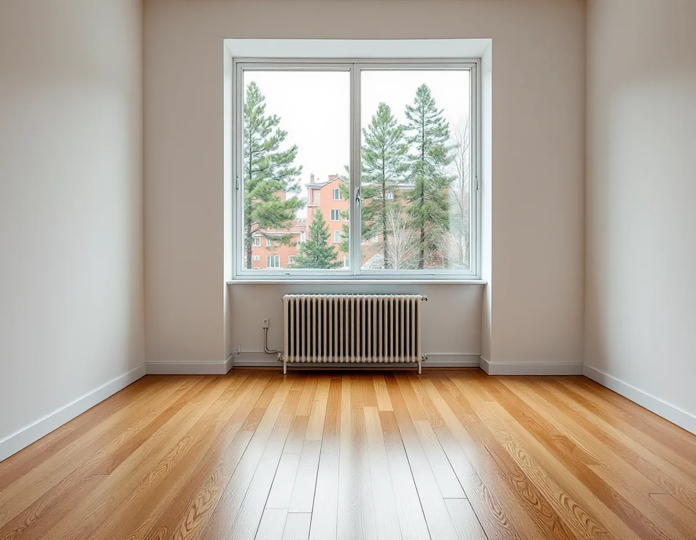
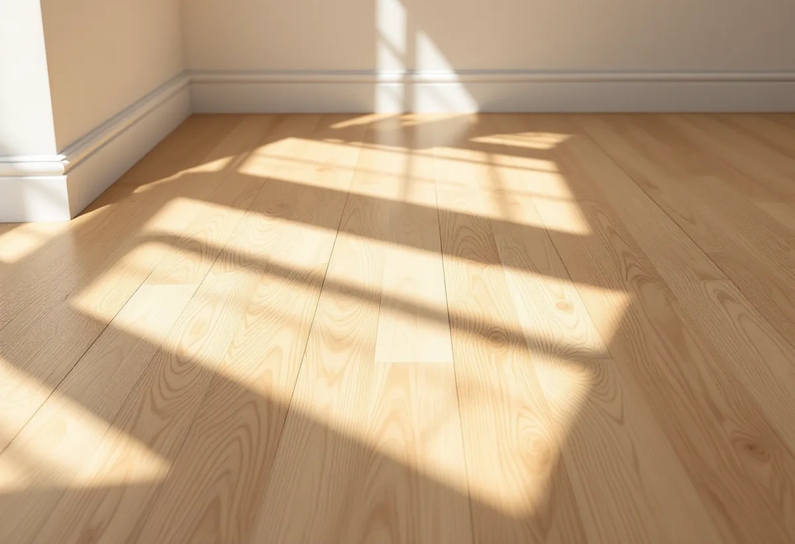

Platsbesök
Vi tittar på golvet och kontrollerar att det går att slipa och inte sviktar.
När slipmaskinen har gått och lacken eller oljan har torkat ska golvet hålla en viss nivå. Golvbranschen har skrivit ner hur ett trägolv bedöms och vilka fel som ska åtgärdas. Geal Entreprenad AB slipar och ytbehandlar trägolv i lägenheter och radhus i Farsta, och vi går igenom golvet tillsammans med dig efter samma grunder när jobbet är klart.

Farsta stod klart 1961, ett år efter Högdalen, skriver Stockholms stad i vägledningen Varsam utveckling av småhus- och villaområden. Farsta planerades i stor utsträckning med bilen som utgångspunkt, med stora parkeringsplatser vid centrum. Gemensamt för tunnelbanestäderna blev att de högre husen placerades närmast centrum och tunnelbanestationen, med grupper av rad- och kedjehus längst ut. I vägledningens tabell räknas Farsta som kulturhistoriskt värdefull miljö.
Det mesta av stadsdelen är lägenheter. Enligt stadens områdesfakta fanns 7 810 bostäder i Farsta 2025, varav 545 i småhus och 3 415 bostadsrätter. I Farsta strand var 328 av 2 861 bostäder småhus. Ett golv som slipas i Farsta ligger alltså ofta i en lägenhet.

Golvbranschens bedömningsgrunder för skönhetsfel i massiva trägolv har en huvudregel: ett mindre skönhetsfel ska vara direkt synligt vid en opartisk bedömning som görs med normal noggrannhet. Besiktningen görs i allmänhet stående. Fel som bara framträder i visst ljus, från vissa delar av rummet eller först efter att någon har pekat på dem räknas inte som fel.
Klimatet spelar in. För fel som hänger ihop med fukt ska rummet vid bedömningen hålla 18–25 grader och 30–60 procents relativ fuktighet. Ligger klimatet utanför det gäller inte toleranserna. Springor mellan brädorna tillåts motsvara en procent av brädans bredd vid den lägsta godtagbara luftfuktigheten, 30 procent, och kupning eller skålning får vara högst en procent av bredden.
Bedömningsgrunderna har en egen grupp för fel i golvslipningsarbeten. Slipränder efter annat än slutpappret, ringar efter kantslipningen, otillräcklig planslipning, valsslag och ondulering åtgärdas genom omslipning och ny behandling. Hörn som inte har slipats eller skrapats punktslipas och bättras med olja på ett naturoljat golv, medan ett lackat golv slipas om och behandlas på nytt.
Riktlinjerna för slipning, SLIP 22, beskriver hur felen undviks. Ondulering, alltså en vågig yta, kan komma av svikt i golvet men också av fel på maskinen, och det är golvsliparens ansvar att maskinen är rätt inställd och servad. Finslipningen görs i träets längdriktning, och kanterna får samma struktur som resten av golvet.
Ett nyslipat golv visar därför hur noga varje steg gjordes. Vi går över golvet i rummets eget ljus innan ytbehandlingen och åtgärdar det vi ser då, när det fortfarande är enkelt.
Även ytbehandlingen har sina punkter. Överskottsolja som bildar blanka partier torrslipas med hårda rondeller, oljas om och poleras. För lite lack eller olja åtgärdas med mellanslipning och lackering av hela ytan eller med mer olja, och en ojämn lackyta med vallar eller knottror mellanslipas och lackeras om. Flagnar lacken krävs omslipning.
Bedömningsgrunderna påpekar också att golv som utsätts för punktslitage bör skyddas, till exempel med ett underlägg under en kontorsstol med hjul. I en lägenhet med arbetsplats hemma är det värt att tänka på direkt när golvet är nytt.
En sak räknas inte som fel. Färgförändring i trä på grund av UV-ljus, och den rödfärgning som ett furugolv får med tiden, åtgärdas inte enligt bedömningsgrunderna.
Ska golvet i stället bytas, till exempel i hallen eller köket, finns mer under golvläggare i Farsta. Golv och ytbehandlingar beskrivs också på sidan om golvläggning.
Vi tittar på golvet och kontrollerar att det går att slipa och inte sviktar.
Slipning, lagning och ytbehandling redovisas var för sig.
Grov-, mellan- och finslipning, med kantslip längs väggarna.
Vi går över golvet i rummets ljus och åtgärdar ränder och hörn.
Lack eller olja stryks i rätt mängd med torktid mellan lagren.
Vi går igenom golvet stående med dig och lämnar skötselråd.
Golvslipning är rotarbete enligt Skatteverket. I en bostadsrätt krävs att du har underhållsansvaret för golvet enligt stadgarna och att arbetet görs i bostaden, innanför väggar, tak och golv.
Avdraget är 30 procent av arbetskostnaden, högst 50 000 kr per person och år och högst 75 000 kr tillsammans med rutavdrag. Lack, olja och resor ger inget avdrag. Geal drar avdraget direkt på fakturan.
Golvytan, golvets skick, hur mycket som behöver lagas och vilken ytbehandling du väljer. Efter ett gratis platsbesök får du ett skriftligt kostnadsförslag.
Parkett, trägolv, klinker och slipning.
Golvläggning i Stockholm →Takbyte, takbesiktning och plåtarbeten.
Takläggare i Farsta →ABC-staden, radhus och asbest i våtrummet.
Badrumsrenovering i Farsta →Tegel, puts, skivor och trädetaljer.
Fasadmålning i Farsta →Radhus, grupphus och fasadskivor.
Fasadrenovering i Farsta →Linoleum, plastgolv och klinker i småstugan.
Golvläggare i Farsta →Småstugor, ädelputs och radhus i Söderort.
Målare i Farsta →Skorstensbeslag och plåttak i Farsta.
Plåtslagare i Farsta →Förråd, gäststuga och skärmtak vid småstugan.
Snickare i Farsta →Tapet i 1960-talets lägenheter.
Tapetsering i Farsta →Småstugorna och typritningarna.
Totalrenovering i Farsta →